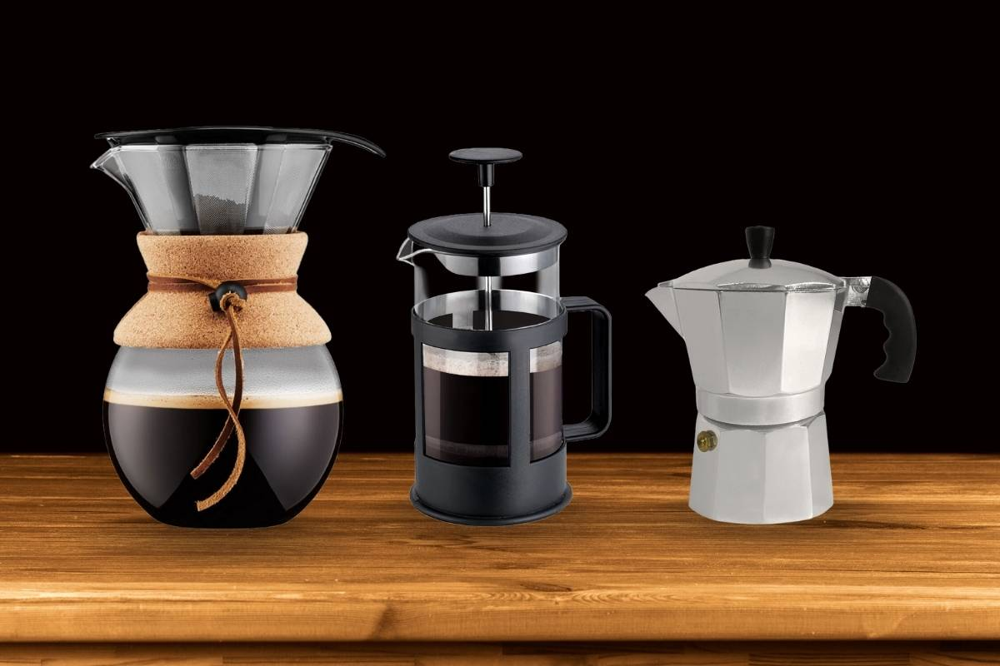
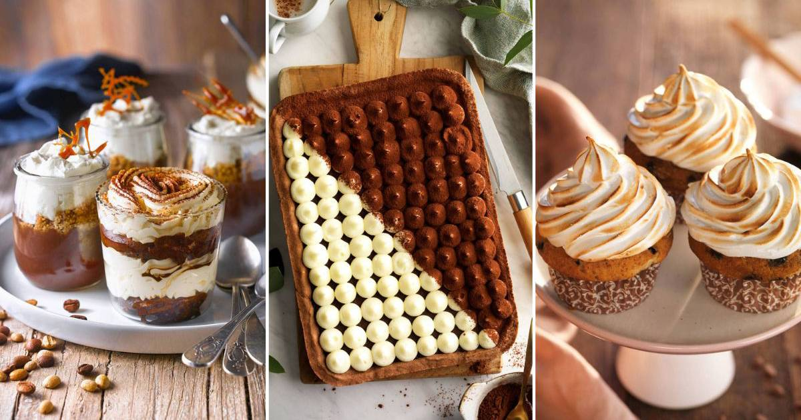

Nuestros próximos cursos y talleres

Imagen tomada de: https://cafelafuente.com/principales-metodos-de-extraccion-del-cafe/
Técnicas de extracción de café
Precio: Gratis
Cupo: 20
Las técnicas de extracción del café son diversas y cada una ofrece una experiencia de sabor única. Entre las más populares se encuentran el método de filtrado, que incluye el uso de cafeteras de goteo y V60, proporcionando un café limpio y suave; la prensa francesa, que resulta en una taza con mayor cuerpo y aceites naturales.

Imagen tomada de: https://www.elmueble.com/recetas/recetas-para-amantes-cafe-mas-alla-tiramisu_50548
4 recetas de café para principiantes
Precio: Gratis
Cupo: 20
Tanto novatos como experimentados,si alguna vez te has sentido abrumado por la cantidad de técnicas y recetas disponibles para preparar café, ¡has llegado al lugar correcto! Prepárate para embarcarte en un viaje de descubrimiento y sabor, y convertirte en un experto en tu propia cocina. ¡Vamos a empezar esta deliciosa aventura juntos!